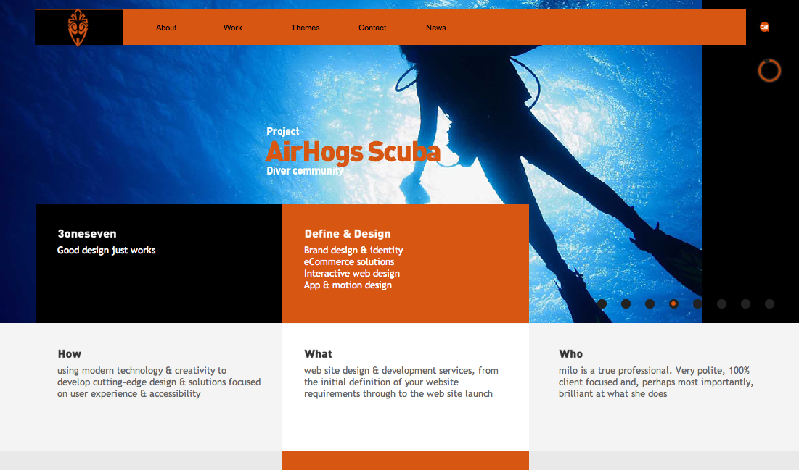

www.studio-output.com

This site uses a small logo in the top left corner, using fairl simple design and color scheme to convey neatness. This site functions very well, the captions are clear and concise.
A unique feature included in this site is the option of two separate view modes; mosaic and grid. Each part of the site uses different animations and layouts to keep the scene changing. A consistent animation on the site is that the images are slightly enlarged when moused over.
The top bar remains the same throughout the site, which provides easy navigation. A search box is provided to find anything on the site. In addition to the main categories, there are also subcategories, which help navigate to popular places on the site.
www.weightshift.com

I like the navigation bar at top, which flows down into large image, then divides into categories below. This style presents a lot of information without overwhelming user.
This site clearly displays projects through animated circular snapshots.Each image is a preview of the project, which is defined by the caption below, making it very easy to follow.
At the bottom of the page there social networking links, and an e-mail entry form, interacting with the user, encouraging and publicizing the site.
3oneseven.com
{kind=link}
This site is very unique in its combination of animations and navigation. The navigation bar at the top of the screen stays fixed at the top of the window, even while one scrolls down the page. Meanwhile, the animations are changing in the background. I really like the transitions between images as the home page animates. At times the images change with a checkerboard effect, while other times the image slides up and down to reveal a new image.
This hybrid layout includes the power grid layout combined with gallery layouts for the work and theme pages. This site makes the user want to explore it to its limits with the many animations and interactive javascript.